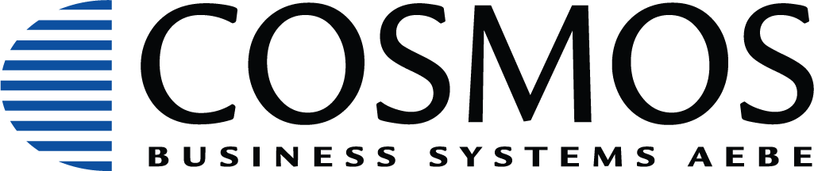
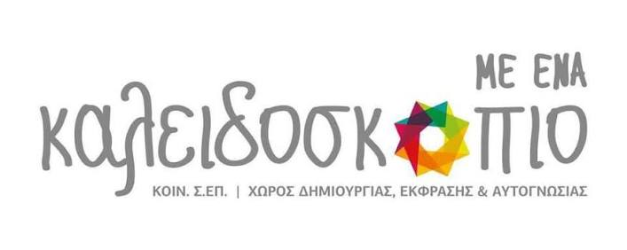
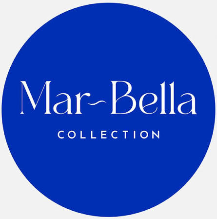

Μαζί, δημιουργούμε ασφαλέστερους χώρους
Together, we create safer spaces
Στη HandsSaveLives συνεργαζόμαστε με οργανισμούς και επιχειρήσεις, συμβάλλοντας στην ενίσχυση της ετοιμότητάς τους για την αντιμετώπιση επειγόντων περιστατικών.
Μέσα από την εκπαίδευση του προσωπικού στις Πρώτες Βοήθειες, την εγκατάσταση απινιδωτών και την ενημέρωση για την ορθή χρήση τους, βοηθάμε τους ανθρώπους να αποκτήσουν τις γνώσεις και την εξοικείωση που μπορούν να αποδειχθούν καθοριστικές όταν κάθε λεπτό μετράει.
At HandsSaveLives, we work with organisations and businesses to strengthen their preparedness for emergency situations.
Through staff first aid training, the installation of automated external defibrillators (AEDs), and guidance on their proper use, we help people gain the knowledge and confidence that can make a crucial difference when every minute counts.
Κάθε συνεργασία είναι μια σχέση εμπιστοσύνης και μια κοινή προσπάθεια για την προστασία της ανθρώπινης ζωής.
Ευχαριστούμε τους οργανισμούς και τις επιχειρήσεις που μας εμπιστεύτηκαν την εκπαίδευση των ανθρώπων τους και την υλοποίηση δράσεων που ενισχύουν την ετοιμότητα και την ασφάλεια στους χώρους τους.
Every partnership is a relationship built on trust and a shared commitment to protecting human life.
We thank the organisations and businesses that have entrusted us with training their people and delivering initiatives that strengthen preparedness and safety in their workplaces and communities.

COSMOS Business Systems
Καλειδοσκόπιο
Mar-Bella CollectionΗ αποτελεσματική ανταπόκριση σε ένα επείγον περιστατικό προϋποθέτει γνώση, εξοικείωση και κατάλληλη προετοιμασία. Στη HandsSaveLives υποστηρίζουμε αυτή την προσπάθεια μέσα από:
Responding effectively to an emergency requires knowledge, familiarity and appropriate preparation. At HandsSaveLives, we support this effort through:
Ανάπτυξη γνώσεων και πρακτικών δεξιοτήτων για την αντιμετώπιση επειγόντων περιστατικών.
Building knowledge and practical skills for responding to emergencies.
Υποστήριξη στη διάθεση του κατάλληλου εξοπλισμού για την αντιμετώπιση αιφνίδιας καρδιακής ανακοπής.
Supporting access to appropriate equipment for responding to sudden cardiac arrest.
Εξοικείωση με τη λειτουργία της συσκευής και τα βασικά βήματα χρήσης της.
Becoming familiar with how the device works and the essential steps for using it.
Ευαισθητοποίηση και ενημέρωση για τη σημασία της έγκαιρης αναγνώρισης ενός επείγοντος περιστατικού και της άμεσης ανταπόκρισης.
Raising awareness of the importance of recognising an emergency early and responding promptly.
Κάθε χώρος έχει τις δικές του ανάγκες. Είτε πρόκειται για την εκπαίδευση του προσωπικού σας είτε για την ενίσχυση της ετοιμότητας του χώρου σας με εξοπλισμό και ενημέρωση, η HandsSaveLives είναι στη διάθεσή σας για να συζητήσουμε τις κατάλληλες λύσεις.
Επικοινωνήστε μαζί μας για να σχεδιάσουμε μαζί τα επόμενα βήματα.
Every workplace has its own needs. Whether you want to train your team or strengthen preparedness with equipment and awareness activities, HandsSaveLives is here to discuss solutions that suit your organisation.
Contact us to plan the next steps together.